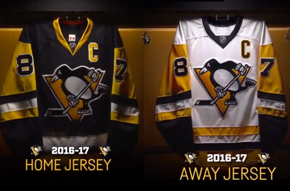

- Страна США
- Город Питтсбург, Пенсильвания
- Основан 1967
- Стадион PPG Paints-арена
- Цвета чёрный, золотой, белый
- Хоккейная лига НХЛ
- Дивизион Столичный
- Конференция Восточная
- Главный тренер Майк Салливан
- Владелец Марио Лемье, Рон Беркл
- Президент Дэвид Морхаус
- Ген. Менеджер Джим Рутерфорд
- Капитан Сидни Кросби
- Кубок Стэнли 1991, 1992, 2009, 2016, 2017
История клуба
Питтсбург Пингвинз (англ. Pittsburgh Penguins) — профессиональный хоккейный клуб, выступающий в НХЛ. Клуб базируется в городе Питтсбург, штат Пенсильвания, США. Пятикратный обладатель Кубка Стэнли (1991, 1992, 2009, 2016, 2017). До «Пингвинов» в НХЛ уже играла команда из Питтсбурга — «Питтсбург Пайрэтс», с 1925 по 1930 годы. Домашние игры команда играла на арене «Дукейн-гарденс». В результате Великой депрессии владельцы клуба столкнулись с финансовыми трудностями. Упала посещаемость игр, клуб пытался продать своих звёздных игроков, чтобы свести концы с концами. Перед началом сезона 1930—1931 долг Пиратов составлял $400.000, не было средств для реконструкции старого ледового катка, и было принято решение о переезде клуба в другой город штата — Филадельфию, где они отыграли один сезон под названием «Филадельфия Квакерз». Другой клуб из Питтсбурга — «Питтсбург Хорнетс» с 1930 по 1967 годы выступал в (АХЛ). В феврале 1966 года Питтсбургу была предоставлена франшиза клуба НХЛ, которым станет «Питтсбург Пингвинз». Это означало окончание истории «Шершней». 30 апреля 1967 года, в финале Кубка Колдера «Шершни» победили команду из Рочестера, забросив победную шайбу на 26 секунде овертайма. Автором последней в истории «Шершней» шайбы стал Билли Харрис, будущий главный тренер сборной Канады в Суперсерии СССР — Канада 1974 года.
Расширение НХЛ и создание клуба
Идея расширения НХЛ предлагалась ещё в 1963 году президентом «Нью-Йорк Рейнджерс» Уильямом Дженнингсом. Однако только в 1965 предложение Дженнингса было принято, и президент НХЛ Кларенс Кэмпбелл объявил о расширении Национальной хоккейной лиги. Это решение означало окончание 25-летней эры «Оригинальной Шестёрки» Весной 1965 года сенатор штата Пенсильвания от Киттаннинга (города, расположенного в 71 км северо-восточнее Питтсбурга) Джек Эдвин Макгрегор во время долгой поездки по автомагистрали в направлении Гаррисберга обмолвился в беседе со своим одноклассником по юридической школе Питером Блоком о том, что Питтсбург не достиг своего потенциала в спортивном плане. Питер Блок был большим поклонником североамериканского хоккея. К концу поездки друзья твердо решили искать пути по возвращению Питтсбурга в НХЛ. План Макгрегора заключался в создании группы инициативных людей, целью которой было возвращение франшизы НХЛ обратно в Питтсбург. Участниками группы стали самые известные и влиятельные общественные лица города, которые к тому же были заядлыми любителя спорта. Группа инвесторов сосредоточила своё внимание на возможности использования НХЛ как инструмента для дальнейшего разностороннего развития Питтсбурга. Макгрегор и Блок узнали, что по плану расширения НХЛ планирует добавить по две команды с Запада, Среднего Запада и Востока. На Западе франшиза досталась Окленду и Лос-Анджелесу, на Среднем Западе — Сент-Луису и Миннеаполису. На Востоке одну франшизу получила Филадельфия, а на другую претендовали два города — Буффало и Питтсбург. Какую из двух команд выберут — все зависело от голосов тогдашних владельцев клубов НХЛ. Макгрегор обратился за помощью к Арту Руни, который смог убедить братьев Норрисов — Джеймса (владельца «Чикаго Блэкхокс») и Норрис|Брюса (владельца «Детройт Ред Уингз») повлиять на решение голосования пользу Питтсбурга. Общими усилиями братьев Норрисов, Уильяма Дженнингса и Дэвида Молсона (владельца «Монреаль Канадиенс») 8 февраля 1966 года НХЛ вручила франшизу Питтсбургу.
Название
Следующим важным вопросом было определиться с названием клуба. Мнения разделились, болельщикам нравилось старое название («Шершни»), однако руководство клуба, и в первую очередь Питер Блок, в категоричной форме заявили о том, что под таким названием команда в НХЛ играть не будет. «В начале у меня были сомнения, но затем я окончательно решил переименовать клуб, — вспоминает Питер Блок. — „Шершни" были командой из низшей Лиги. Мы знали, что на драфте расширения нам достанутся не самые лучшие игроки, поэтому не хотели, чтобы нас продолжали считать коллективом уровня АХЛ». В дальнейшем стало известно, что с названием нового клуба руководство определилось уже заранее. Его предложила супруга Джека МакГрегора — Кэрол. Джек стал совладельцем он был очень взволнован, — рассказывает Кэрол. — Первым делом он предложил назвать команду. Мы стали думать над этим и перебирать возможные варианты, начинавшиеся на букву „П". Я спросила его как болельщики называют «Сивик-Арену»? «Иглу» — ответил муж. Тогда я подумала лед… Питтсбург… Пингвины. Мы перебрали ещё несколько вариантов, но каждый раз возвращались к пингвинам». «Пингвинз» пришлись по душе всем нашим друзьям, после чего мы сделали эскиз черно-белой формы". Также по итогам проводимого газетой Post-Gazette конкурса на лучшее новое название клуба, 700 человек из 26 тысяч приславших в редакцию свои варианты указали именно такой вариант. 10 февраля 1967 года был официально обнародовано новое название хоккейного клуба из Питтсбурга. Спустя 5 дней Эмилию Робертс из городка Бель-Вернона назвали победительницей конкурса болельщиков, наградив первым в истории клуба сезонным абонементом.
Игровая форма
